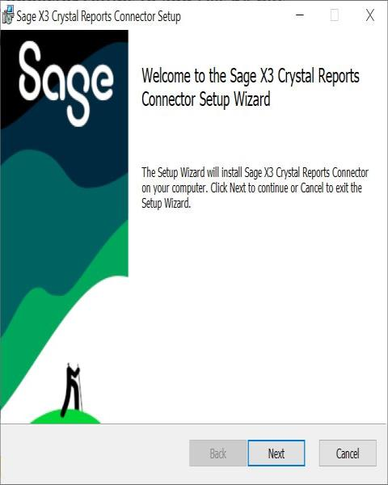
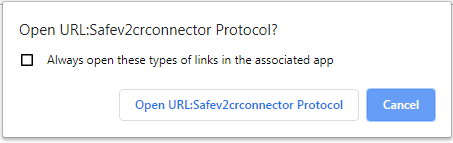
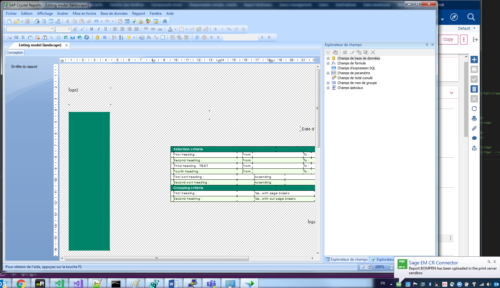
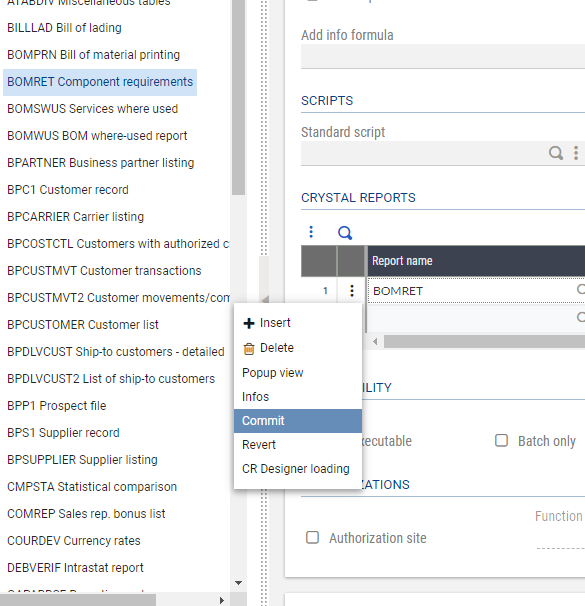
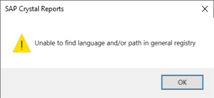
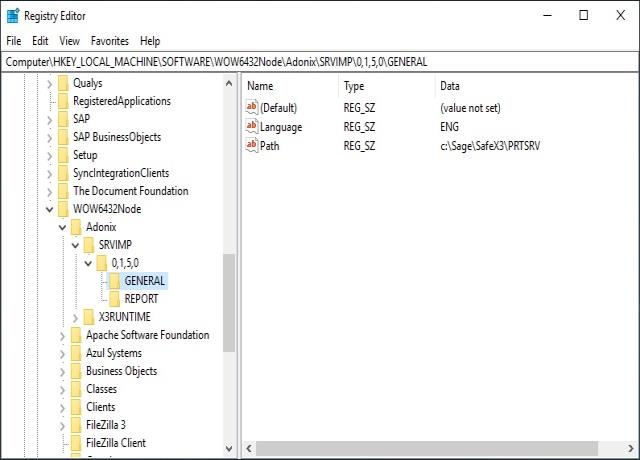
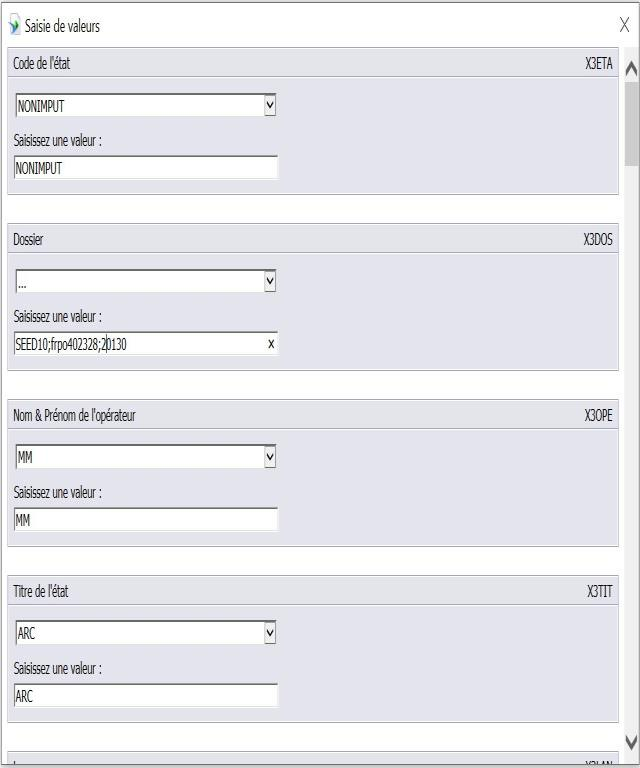
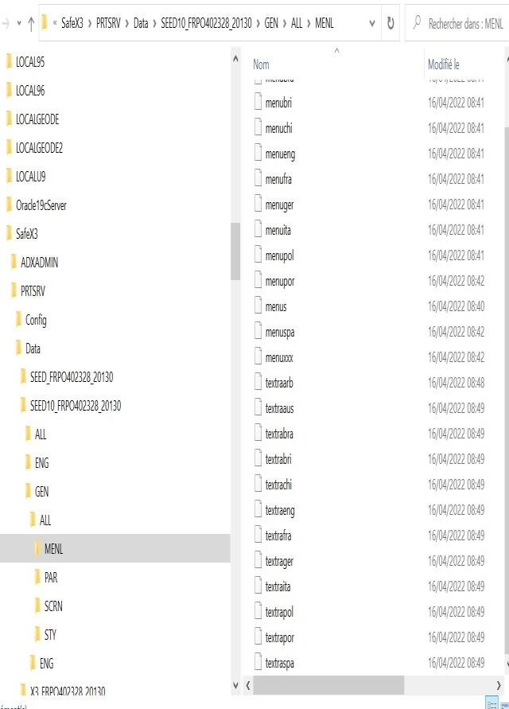

Local Crystal Report development
- Prerequisites
- Local use of Crystal Reports
- Report Edition
- Report creation
- Report modification
- TroubleShooting
Prerequisites
The first prerequisite is of course to have Crystal Designer installed in one of the following versions: 2013, 2016 or 2020.
You also need to create the relevant ODBC data source on your PC if you want to access to the database through Crystal Designer (at least to add a table to a report, or to add a column to a given query).
Then, you need to install the CR connector plugin in your browser by following a link in the Utility / Installation path of the Administration menus.
A dedicated ODBC datasource is now automatically created on your desktop by the connector, mapped on the database of the current endpoint. The datasource name is ADX CRCNN solname, with solname which represents the name of the solution of the current endpoint.
Of course you could create and use your own ODBC datasource, but if you are not comfortable with datasource creation, we recommend using the one created by the connector.
If you are using Crystal Designer 2016 or 2020, we recommend to install the optional feature named Data Access/ODBC Datadirect of the Crystal Designer setup, in order to work with the latest version of the CR ODBC Drivers.
Note that Crystal Report Designer 2020 is only supported from SAGE X3 CRConnector 2.28, released in 2023.04.
The following screen appears during the download:

Then an installation procedure starts
By clicking successively on Next, the installation completes
Finally, there is one last prerequisite to be able to edit future reports. To use the Transfer development mode, add your printer destination in the X3 folder. Indeed, you need to have your folder published on the print server before using this tool.
Local use of Crystal Reports
There is no longer a session switch to Report Development mode.
The user parameter DEVCRY still remains, but it can have three values:
- No doesn't allow a user to edit reports
- Yes allows a user to switch a report in development mode.
- Administrator allows a user to quit the development mode (by the Revert operation described further) even if he is not the owner of the sandbox copy.
At the very first use of the connector, through the GESARP function, you might have a pop up asking for confirmation, like the following one:

If you want to avoid the display of this pop up in the future, don't forget to check the Remember my choice box.

After few seconds, you Crystal Designer is launched with the selected report
Note the bubble "CRConnector" at the right bottom: this is actually this SAGE component which launch SAP Crystal Report Designer.
Report Edition
Editing a report starts from the report editor (classic page function GESARP). A contextual menu on the line that displays the report allows you:
- To switch the report to development mode (Transfer). This transfers the report to a local sandbox and launches the connector that runs the Crystal Report developer. The report is now locked by you and cannot be edited by someone else.
- To roll back if necessary, by using the Revert choice on the line (you will lose your modifications).
- To open Crystal Report designer by using Crystal Report Designer Load if you previously exited during the Report editing.
- To validate the report and to send it back to the repository (by using Commit).
- Don't forget first to click Save in the left panel of Crystal designer.

Each time you save locally from the report designer, a version of the report is automatically saved in the sandbox of the corresponding Report server.
This allows you to test immediately the results of your modified report through the AIMP classic function. However, this option is available only for the user who edits the report; the other users continues to use the standard report as long as the commit has not been done.
See the dedicated help page of GESARP function for more details regarding report modification workflow.
Report creation
Creating a new report requires you to upload the new report first in the REPORT storage area on the application server. This can be done either from scratch, or by starting from a template that needs to be downloaded to the local PC, renamed, and uploaded.
The report can then be edited from GESARP function through the connector.
See the dedicated help page of GESARP function for more details regarding report creation workflow.
Report modification
Warning
Users mustn't modify the report in the X3 reference folder because future updates in Sage X3 would overwrite their changes.
If the report exists, the ADMCA user (or a user with access) must:
- download the report from the X3 reference folder,
- upload it to the child folder.
The report in the child folder is the one the users should be modifying.
The user will get an error in the transfer option if:
- he doesn't have rights to the X3 reference folder,
- the report hasn't previously been uploaded to the child folder.
TroubleShooting
Support SAP Crystal Report Designer 2020
SAP Crystal Report Designer 2020 is supported from PrintServer 2.28 and CRConnector 2.28
Error in SAP Crystal Report Designer 2020 : UFL 'u112ltext.dll' that implement this function is missing:
You need to upgrade CRConnector to CRConnector version 2.28 and PrintServer 2.28 to solve this issue.
CrystalReport Designer 2020 is running in 64 bits.
CrystalReport Designer 2016 is running in 32 bits.
U212LText.dll and U212ltoword.dll are from this version 2.28 compile in 32bit and 64 bits to support Crystal Designer 2016 and 2020.
Unable to find language and/or path in registry:

In case of error while launching a preview in the SAP Crystal Designer 2020:
"Unable to find language and/or path in registry" :
This error is due to a bug in SageCRConnector 2.28, while reading registry in 64 bit instead of 32 bits.
Correct entrie to check in registries: Computer\HKEY_LOCAL_MACHINE\SOFTWARE\WOW6432Node\ADONIX\SRVIMP\0,1,5,0\GENERAL, key Language
You need to upgrade CRConnector to CRConnector version 2.29 to solve this issue.
Previous version of CRConnector 2.29 will check the key Language in Computer\HKEY_LOCAL_MACHINE\SOFTWARE\ADONIX\SRVIMP\0,1,5,0\GENERAL, the 64 bits path, which doesn't exist.
Registry entries needed by CRConnector:

Example Registy entries to import on a station WITHOUT PrintServer:
Windows Registry Editor Version 5.00 [HKEY_LOCAL_MACHINE\SOFTWARE\WOW6432Node\ADONIX] [HKEY_LOCAL_MACHINE\SOFTWARE\WOW6432Node\ADONIX\SRVIMP] [HKEY_LOCAL_MACHINE\SOFTWARE\WOW6432Node\ADONIX\SRVIMP\0,1,5,0] [HKEY_LOCAL_MACHINE\SOFTWARE\WOW6432Node\ADONIX\SRVIMP\0,1,5,0\GENERAL] "Path"="c:\\Sage\\SafeX3\\PRTSRV" "Language"="ENG" [HKEY_LOCAL_MACHINE\SOFTWARE\WOW6432Node\ADONIX\SRVIMP\0,1,5,0\REPORT] "ForceNonUnicodeFont"="0" "NonUnicodeFont "="Courier New" "PrintEngine"="0" "ForceUnicodeFont"="0" "U2LTEXT_TraceMode"="ON" "U2LTOWORD_TraceMode"="ON"
Don't forget to indicate a correct endpoint in the report to be able to read local menus: Folder;HostName;Port

In the example, if the PrintServer is installed in c:\Sage\SafeX3\PRTSRV, localmenu files while be read from:
c:\Sage\SafeX3\PRTSRV\Data\[Folder]_[Hostname]_[Runtime Port]\GEN\ALL\MENL Result: C:\Sage\SafeX3\PRTSRV\Data\SEED10_FRPO402328_20130\GEN\ALL\MENL

For further information
For cloud: Standard Crystal Reports Modification guide.
For on-premises: Standard Crystal Reports Modification guide.